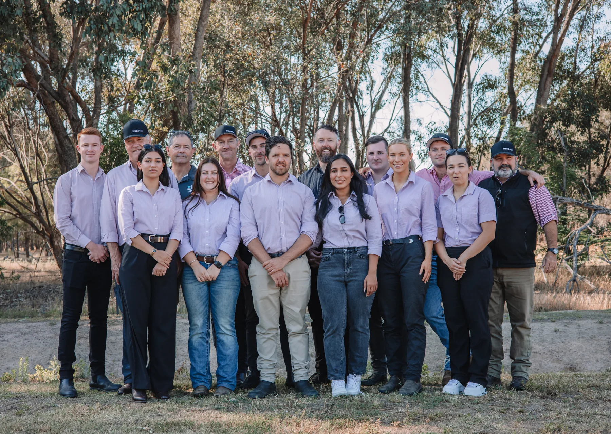
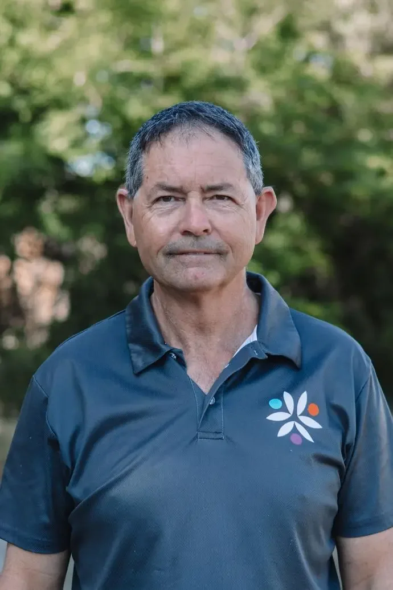

Meet your agronomy team.
Find an agronomist for your crop and region. Bring your test results or ask about a prescription blend for your farm.
The agronomists behind your tree, berry, vine and small crops.
Andrew Smith
Generational cherry grower at Smiths Fruit and leader of Hybrid-Ag’s horticulture team.
Meet AndrewChelsea Hall
Nutritional Agronomist and plant and soil scientist with First Class Honours, working with cherries, stone fruit and pome fruit from Goulburn to Batlow.
Meet ChelseaNathan Strawbridge
Nutritional Agronomist. Vineyard and tree-crop nutrition across McLaren Vale, the Barossa and the Riverland.
Meet Nathan
Andrew Woodford
Nutritional Agronomist with decades of experience in soil and crop nutrition across Queensland.
Meet AndrewJoshua Hull
Field Assistant supporting sampling and recording field observations across Victoria.
Meet JoshuaThe agronomists behind your grain, oilseed and pasture.

James White
Nutritional Agronomist working with grain, oilseed and pasture growers using Differential Sap Analysis. Known to many growers as ‘Jimmy’.
Meet James
Bruce Armstrong
Senior Nutritional Agronomist with decades of experience in soil and plant nutrition, including Calcium and soil structure.
Meet BruceTalk through your results.
A report is easier to use when you can ask questions about it. Speak with the team about your results and what you’re seeing in the crop before deciding on the next application.
Find your agronomist
Tell us your crop and region so we can put you in touch with the team.
Share your question
Send the test report or a photo and explain what you would like help with.
Bring previous reports
Earlier results from the same block or paddock give the agronomist more context.
Ready to go through the data with one of us?
Tell us what you grow and where you are, and we can put you in touch with an agronomist.